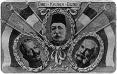
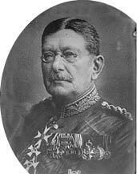
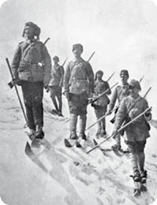
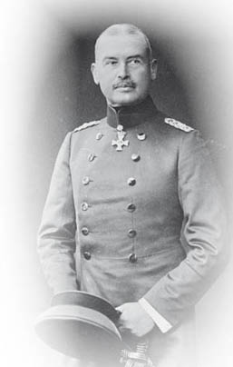

XXIII : TÜRK-ALMAN İTTİFAKININ ORTAYA ÇIKIŞI

Almanya’nın, Osmanlı İmparatorluğu’nu Birinci Dünya Savaşı’nda yanına çekmesini sağlayan egemenliği, otuz yıl boyunca Yakın Doğu ve özellikle İstanbul’da askıya alınmış olan diplomatik, askerî ve ekonomik çabaların bir sonucudur.
II. Wilhelm’in Alman İmparatorluğu’nu kuran eski şansölyeyi yerinden etmesinden on yıl önce Bismarck, Sultan Abdülhamid’in davetine icabet etmek için General von der Goltz komutası altındaki askerî birliği Osmanlı topraklarına göndererek bu topraklara duyulan ilginin ilk işaretini vermiştir. Mr. Gladstone’un 1880 yılında tekrar güce kavuşmasının ardından gerçekleşen Büyük Britanya ile Osmanlı İmparatorluğu arasındaki uzaklaşma, Almanya’ya, Osmanlıların dostu olarak İngiltere’nin yerini doldurduğu ve aksi takdirde Osmanlılar üzerinde asla sahip olamayacağı nüfuzu garantileyen, Bismarck’ın da kendi çıkarına kullandığı, bir fırsat sunmuştur. Fakat Bismarck, saldırganca eylemlere girişme arzusunda olmadan bu yeni başlangıca doğru yönelmiştir. İngiltere ile Rusya’yı savaşın eşiğine getiren Doğu Sorunu’nun yeniden baş göstermesi, 1870 yılındaki Fransa-Prusya Savaşı’ndan beri Bismarck’ın bütün gayretiyle sürdürmeye çalıştığı barış konvansiyonunu tehdit etmiştir. Bismarck, Almanya’nın gücünün sınırlarını anlamış ve İstanbul hakkında düşündükleri uluslararası alanda yaşanılan birçok usta manevradan biri olmuş; manevrasıyla, silahlanmaya gerek kalmaksızın Avrupa’da üç başarılı savaş sayesinde kazandığı hâkimiyeti sürdürmeyi ümit etmiştir. Rus-Türk Savaşı ve 1878 Berlin Kongresi’nden sonra Bismarck’ın en çok korktuğu şey, iki büyük imparatorluk arasında istemeyerek de olsa taraf tutmaya zorlanacağı fakat Rusya ile yaptığı gizli bir “garanti” anlaşmasıyla 1879 Avusturya-Almanya ittifakından dolayı St. Petersburg’da baş gösteren kuşkuları yatıştırmaya çalışarak her iki imparatorluğun dostluğunu da korumak için çabaladığı Rusya ile Avusturya-Macaristan arasındaki bir çatışmadır. 1890 yılında Bismarck’ın tahttan inişine kadar, Alman diplomasisinin İstanbul üzerindeki büyüyen etkisi Türkiye lehine olacak şekilde derecelendirilmiştir; bunun bir örneği olarak Bulgar Prensi Alexander’ın Rusya ile Güneydoğu Avrupa’da Avsuturya-Macaristan arasındaki tehlikeli düşmanlığı zayıflatma amacıyla Doğu Rumeli birliğini eyalet ile birleştirmeye çalışması verilebilir. Diğer taraftan, II. Wilhelm tahta çıktığında, Almanya için yeni bir fikir olmasa da General von der Goltz’un raporlarıyla tazelenen, Almanya’nın topraklarını genişletmesi için dünyada sahipsiz Türk İmparatorluğu’ndan daha büyük veya daha gelecek vaat eden bir yer olmadığı fikrine kapılmış durumdadır. Dış politika açısından eski şansölye ile yeni imparator arasındaki ilk büyük fark, II. Wilhelm’in tahta çıkışının ertesi yılında Osmanlı sultanına yapmış olduğu devlet ziyaretiyle ortaya çıkmıştır. Bismarck, Almanya’nın Türkiye ile olan ilişkilerindeki artmakta olan yakınlığa önem vermenin yersiz olduğunu düşünmüştür. Bismarck, Almanya’nın ‘dünyanın hâkimiyetini’ ele geçirmede Türkiye’nin ‘köprü’ görevinde olduğunu nasıl olur da fark edemediğine dair soruya şu şekilde cevap vermiştir: “Dünya hâkimiyeti, politik sözlüğümde yer almayan bir terimdir.” II. Wilhelm, buna rağmen, amacına sadık kalmış ve Türkiye’nin Alman İmparatorluğu’nun çıkarları için var olduğuna dair inanışı kuvvetlenerek İstanbul’dan dönmüştür.
Takip eden yıllar, Almanya’nın ekonomik ve siyasî açıdan Türkler üzerinde hararetli bir etkisinin olduğu bir dönemdir. İlk olarak bir İngiliz şirketine tanınmış olan Boğazlardan Marmara Denizi’nin Asya kıyısına kadar demiryolu hattı yapma hakkı, 1888 yılında Alman Bankası’na tanınmıştır. Berlin’de B.B.B. (Berlin-Bizans-Bağdat) olarak bilinen Bağdat Demiryolu Şirketi’nin ana kuruluşu olan Alman Anadolu Demiryolları Şirketi bünyesinde, Anadolu’da ana hat haline gelmiş olan Ankara’ya ilerleme hakkı tanınmıştır. “Kuvvetli bir devletin güçsüz bir devleti silah kullanmadan nüfuzu altına alması” ilkesi her yönden uygulanmıştır. Osmanlılar tarafından finanse edilen Alman gemicilik şirketleri yalnızca Akdeniz’de değil Karadeniz’de de faal bir duruma gelmiştir. Deutsche Levant Linie bu amaçla oluşturulmuştur. Hamburg-Amerika ise İran Körfezi’nde dahi Alman bayrağı açmıştır. Alman bir kablo şirketi, Almanya ile Türkiye arasındaki iletişimi İngiliz kablolarından bağımsız hale getirmek için Karadeniz’deki Romanya limanı olan Köstence’den İstanbul’a kadar kablo döşemiş ve Anadolu ile Mezopotamya’ya da önemli açılımlar gerçekleştirme vaadinde bulunmuştur. Almanlar, Türkiye’de kablosuz tesisatları döşeyen ilk ülkedir. Alman ticareti de silah ticaretiyle birlikte hızla gelişmiştir. Türk ordusu yalnızca Alman askerleriyle yeniden düzenlenmemiş, ayrıca Alman imalatçıların silahlarını da kullanmıştır. Alman okulları, Alman bilimsel çalışmaları ve hatta Alman din kurumları, Alman dili ve kültürünü yaygınlaştırmak amacıyla teşvik edilmiş Kızıl Sultan’ın desteğiyle II. Wilhelm Haçlılar olarak Kudüs’e girmiş ve üstünde kendisinin ve Mesih’in yüzlerinin bulunduğu dinî bir düşkünlerevi ile kilisenin temelini atmıştır. 1897 yılında Yunanistan tek başına Türklere karşı savaş açtığında, kız kardeşi Yunanistan prensesi olan Alman imparatoru, ordusunun Hıristiyan güçlerine karşı verdiği zafer için Abdülhamid’i kutlayan tek hükümdar olmuştur. II. Wilhelm, Avrupa’da yaşanabilecek büyük bir savaş durumunda Osmanlıları potansiyel ve işe yarayacak bir Alman birliği olarak ele almayı öğrenmiştir.

General von der Goltz
Almanların çıkarlarının ayrıcalıklı olarak ele alınmasının karşılığında II. Wilhelm, Türk İmparatorluğu sınırları içinde ve dışında Abdülhamid ilkelerinin en kötülerini onamaya ve hatta gizli veya açıktan teşvik etmeye karar vermiştir. Alman diplomasisi, “Avrupa Topluluğu”nun Türklerin kötü yönetiminin daha da şiddetlenmesiyle Hıristiyan halkların umutsuzluğa sürüklendikleri vilayetlere, yalnızca vaat edilen ve sürekli olarak es geçilen reformları uygulamak adına gerçekleştirdikleri istikrarsız teşebbüslerini sekteye uğratmaya yardımcı olmuş, ayrıca Osmanlı Saltanatı’nın eski gücünü kaybetmesi üzerine, bütün İslam dünyası üzerinde Halifelik nüfuzunu kullanacağı manevî yetkisiyle Abdülhamid’in yaratıcı aklının bir eseri olan İslamcılık akımını desteklemiştir. Halifelik, Kahire’de bulunan Abbasî halifelerinin soyundan gelenlerin haklarının ellerinden alınması ve İslam dünyasının en kutsal iki şehri olan Mekke ve Medine’nin topraklara katılmasıyla Selim’e geçmiştir. Fakat Şii mezhebinden olan Müslümanlar bu değişikliği tanımamış ve hatta birçok Sünni okulu bunun geçerliliğini sorgulamıştır. Avrupalı güçler arasında yalnızca Almanya Halifeliği tanımış ve Prens Bülow’un da belirttiği üzere, Almanya, İslamcılığın, kendi koloni ve sömürgelerinde büyük Müslüman topluluklara sahip olan Avrupalı güçlere utanç kaynağı olurken Almanya’nın bünyesinde çok fazla Müslüman olmadığı için fitillediği ateşin patlamasından korkacak bir durumu olmadığından Halifeliğe karşı çıkmamıştır. Dolayısıyla II. Wilhelm 1898 yılında ne İstanbul’a ikinci bir ziyarette bulunmaktan ve Abdülhamid’in elini sıkmaktan çekinmiş ne de Şam’da gerçekleştirdiği hararetli konuşmasında “Padişah Hazretleri ve onu halifeleri olarak gören 300.000.000 Müslüman” için değişmez dostluğunu açıkça belirterek İslamcılık hareketini desteklemeye çekinmiştir. 1774 yılında I. Abdülhamid’in Halifeliği resmen Küçük Kaynarca Antlaşması’na eklemiş olmasının ardından Halifelik ilk defa bir Avrupa gücü tarafından tanınmıştır. On dokuzuncu yüzyılda ise sultanlar bütün uluslararası belgelerde “Osmanlı İmparatoru” unvanından ziyade bu “Doğu’nun Sultanı” unvanını kullanmayı tercih etmiştir.
Almanya’nın nüfuzu, II. Wilhelm’in Abdülhamid ile kurmuş olduğu yakın ilişkiden dolayı Jön Türklerin gözünden düştüğü için 1908 yılında baş gösteren İstanbul ihtilali Almanya’nın Osmanlılar üzerindeki etkisinin azalması konusunda tehdit oluşturmuştur. Bosna-Hersek’in bir anda Habsburg Monarşisi’nin topraklarına eklenmesi ve isyandan birkaç ay sonra Bulgarların bağımsızlıklarını ilan etmesi de aynı şekilde Almanya’nın siyasî dostluğuna duyulan güveni sarsmıştır. Fakat Alman egemenliği geçici bir süreliğine sarsılmış, İttihat ve Terakki Cemiyeti iç politikada Abdülhamid yöntemlerine ani bir dönüş gerçekleştirince Abdülhamid gibi bu Cemiyet de Almanların desteğini istemeye ve Abdülhamid’in vermiş olduğu ödünlerle bu desteği almaya itilmiştir. Dahası, Abdülhamid’in barışçı tutumunu etkileyememiş olan Prusya militarizmi Cemiyet’te baskın bir hale gelen askerî güç oluşturmuştur. İhtilalda mühim görevler almış olan askerler, esasında Almanya’da yetişmemelerine rağmen, Alman himayesi altında askerî eğitim almışlardır. Din hususunu çok fazla ön plana almamış olan Jön Türkler başlarda İslamcılık anlayışını benimsememiştir. İslamcılık anlayışının üstünde olmasa da bu anlayışla birlikte kendi Milliyetçilik veya Turancılık anlayışlarını oluşturmuşlardır. Jön Türklerin bu akımı, Prusya’nın Pan-Germenizm anlayışına model olmuş ve tıpkı Turancılık akımı gibi yaygınlaştırılmasında kılıçlara güvenilmiştir. Turancılık anlayışının hedefi, yalnızca, Osmanlı İmparatorluğu’nda yaşayan Türk olmayan halkların Türklerin boyunduruğu altına alınmasını değil, aynı zamanda, Türklerle ırk, dil veya tarihi açıdan herhangi bir bağlantısı bulunan Osmanlı İmparatorluğu dışındaki milletlerin ve ülkelerin de Osmanlı egemenliğine alınmasını içermektedir. Herhangi bir bağlantının bulunamadığı koşullarda ise bu bağlantıyı İslamcılık kurmuştur. Bu şekilde, İstanbul ve Berlin arasında yeni ve kuvvetli bir bağ kurulmuştur. İstanbul’da yaşayan ve zamanının Alman diplomatları arasındaki en kabiliyetlisi olan Alman Elçi Baron Mareşal von Bieberstein, hâlâ Almanya’nın müttefiki olan İtalya 1911 yılında sudan bir sebepten dolayı Türklere ani bir saldırıda bulunduğunda ve Osmanlıların Afrika’daki son toprağı olan Trablus’u işgal ettiğinde aşılması güç bir tehlikeyle karşı karşıya kalmıştır. İtalya ile yaşanan savaştan hemen sonra Birinci Balkan Savaşı baş göstermiş ve 1912-1913 kışında Türklerin başına gelen felaketler Almanya’nın siyasî umutları ile birlikte ordularının düzenini ve silahlarını Almanlara bırakmış olan Jön Türklerin askerî umutlarını suya düşürmüştür.

Sarıkamış Cephesi
Alman diplomasisi ise Osmanlı’yı yıkımdan kurtarmak için 1913 Londra Konferansı’nda Britanya Hükümeti’ni barış ortamının sağlanması için yönlendirmiş ve İkinci Balkan Savaşı’nda Bulgaristan’ın bozguna uğraması Berlin ve Viyana için başka bir hayal kırıklığı yaratmasına rağmen, Sırbistan’ın güç kazanması Alman Drang nach Osten34 ilkesinin önünde yeni ve zorlu bir engel oluşturduğu için, İmparator Wilhelm, Osmanlıların Bükreş Barış Antlaşması’nda Edirne’yi geri almış olmalarından ötürü sultanı tebrik etmiştir. Sırp, Yunan ve hatta Romanya orduları tarafından bastırılmış olan Bulgaristan’ın Edirne’yi elinde tutacak ümidi kalmadığı için bu şehrin Osmanlılar tarafından geri alınması Türk ordusunun başarını göstermemektedir; fakat İstanbul’da egemen hale gelen Enver Paşa’nın harbiye nâzırı olarak gerçek bir diktatöre dönüşmeden evvel saygınlığını artırmıştır. Berlin’de Türk Askerî Ataşeliği’ne getirildiği zamandan itibaren, Enver Paşa, tamamen Almanların tarafını tutmuş ve Alman ordularının yenilmezliğine dair sarsılmaz bir inancı benimsemiştir. 1913 yılının sonunda, İmparator Wilhelm tarafından özellikle seçilmiş olan General Liman von Sanders oldukça büyük bir ordunun başında İstanbul’a gitmiş ve tarihte ilk defa Türk orduları üzerinde tam yetkiye sahip olmuştur. 1914 yılının başlarından itibaren Alman askerleri ve mühimmatları Türk topraklarına doluşmuş ve Enver Paşa ile Alman hükümdarlarının fitilini ateşlemek üzere olduğu dünya savaşıyla ilgili hükümetinin görüşlerini tamamen benimsemiş bir vaziyette temmuz ayının ortalarında İstanbul’a dönen Alman Elçi Herr von Wangenheim arasında mutlak bir müttefiklik için müzakereler gerçekleştirilmiştir.
34 Doğuya Doğru. (çev.)
